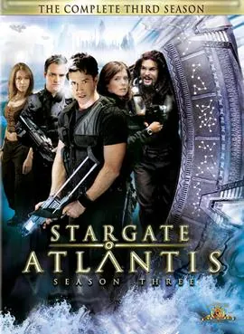

The genetics
The episode's premise is a genetic change: a device built by the Ancients rewrites Rodney McKay's DNA and gives him superhuman powers and enhanced intelligence. The story treats this enhancement as a double-edged gift. What McKay welcomes as a blessing becomes a death sentence, and the only escape is a spiritual one, ascension, which requires him to overcome his ego. The genetics is therefore a vehicle for a moral about arrogance and humility rather than a study of science, and no scientist is responsible for the change, which comes from ancient alien technology. The source summary does not detail his powers or how the episode ends. Real genetic modification cannot transform an adult's abilities in this way; changes to the DNA of a few cells would not alter the brain of a grown person so quickly.
How genetics is portrayed
- Overall portrayal of genetics
- negative Genetic enhancement appears as a seductive gift that McKay first takes as a blessing but that will kill him; salvation lies in humility and ascension, not in the science, so the enhancement works as a dangerous temptation.
- Outcome of the genetic intervention
- negative The Ancient device's change to McKay's DNA gives him superhuman powers and sharper intellect, but it is a death sentence that he can escape only by overcoming his ego and ascending, a spiritual rather than scientific way out.
The story
In this third-season episode of Stargate Atlantis, an Ancient device inside the city of Atlantis alters Dr. Rodney McKay's DNA and gives him superhuman powers. McKay at first takes his new abilities as a blessing, as his already formidable intellect grows even sharper. But the change comes at a price: his enhanced brilliance is checked by his impending death, and the only way to escape it is to overcome his ego and ascend.